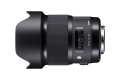
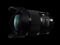

器材库 > 35mm画幅AF定焦镜头 > Art 20/1.4 DG HSM

详细规格
镜头类型
超广角镜头
发布日期
2015-10-16
厂家推荐价格
150,000.00 （日元）
焦距
20mm
最大光圈
f/1.4
最小光圈
f/16
镜头结构
15片/11组
非球面镜片
2片
低/超低色散镜片
7片
光圈叶片
9片
最近对焦距离
27.6cm
最大放大倍率
1:7.1
驱动马达
HSM（超声波马达）
镜头卡口
Canon EF, Nikon AF, Nikon F, Sigma SA
防抖
否
颜色
黑色
尺寸
φ90.7×129.8mm
重量
950g
匿名网友2017-11-13 03:054.25 分
操作性 4.00耐用性 4.00性价比 4.50解像力 5.00色彩还原 4.00机械结构 4.00
单匹将2016-04-22 14:464.42 分
操作性 5.00耐用性 4.50性价比 3.50解像力 4.50色彩还原 4.50机械结构 4.50
cbfaaa2016-04-15 20:02
蓝色神秘2016-01-03 14:534.25 分
操作性 4.00耐用性 4.00性价比 4.50解像力 4.50色彩还原 4.50机械结构 4.00
曹村陈少2016-01-02 11:194.75 分
操作性 4.50耐用性 4.50性价比 4.50解像力 5.00色彩还原 5.00机械结构 5.00
产品图 / 样片

评测 / 相关文章
- 详细内容 （存档）
- 超广大光圈第一镜 适马20/1.4 Art评测 （存档）
- ［试用］适马 Art 20mm F1.4 DG HSM实拍样片 （存档）
- ［资讯］适马Art 20mm F1.4中国大陆 全球首发 （存档）
相关文章
- ［试用］适马20/1.4 ART，拍的是情怀 （原站已下线）
- ［试用］迢迢牵牛星 皎皎河汉女 （原站已下线）
- ［资讯］适马镜头荣获 2016美国LUCIE技术大奖 （存档）
- ［试用］适马 20/1.4 ART集中营 （原站已下线）
- ［试用］拍的是情怀 适马20/1.4ART大光圈广角简评 （原站已下线）
- ［资讯］可支持佳能C300 II 适马发布镜头固件升级 （原站已下线）
- ［资讯］适马公布三款镜头搭载1DXII存在曝光问题 （原站已下线）
- ［资讯］适马镜头荣获TIPA2016三项大奖 （存档）
- ［试用］适马 Art 20mm F1.4 DG HSM实拍样片 （存档）
- ［试用］超广大光圈第一镜 适马20/1.4 Art评测 （存档）
- ［资讯］适马Art 20mm F1.4中国大陆 全球首发 （存档）
- ［资讯］适马发布F1.4光圈全画幅超广角定焦镜头 （存档）